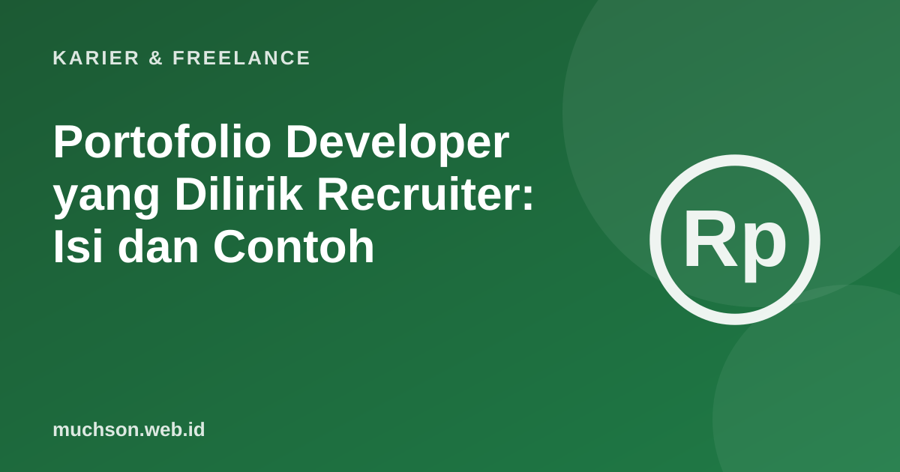

Beranda › Artikel › Karier & Freelance
Karier & FreelancePortofolio Developer yang Dilirik Recruiter: Isi dan Contoh
Recruiter dan calon klien biasanya memindai portofolio dengan cepat. Mereka mencari jawaban atas tiga hal: siapa Anda, apa yang bisa Anda kerjakan, dan buktinya. Portofolio yang baik menjawab ketiganya dalam beberapa menit.

Yang perlu ada di halaman depan
Menulis studi kasus
Daftar teknologi saja tidak memberi tahu apa pun tentang cara Anda berpikir. Untuk tiap proyek, ceritakan dengan singkat:
- Masalah dan pengguna. Apa yang diselesaikan, untuk siapa?
- Peran Anda. Apa yang Anda kerjakan sendiri dan apa yang dikerjakan tim?
- Keputusan penting. Pilihan teknis, alasannya, dan alternatif yang ditolak.
- Hasil. Angka yang bisa dipertanggungjawabkan, atau cerita pengguna nyata.
- Pelajaran. Apa yang akan Anda ubah bila mengerjakannya lagi?
Kesalahan yang sering terjadi
Tambahan yang berharga
Menulis artikel tentang hal yang Anda pelajari memperlihatkan cara berpikir Anda dan membuat Anda lebih mudah ditemukan di mesin pencari.
Tanya jawab
Berapa proyek yang ideal?
Tiga sampai enam yang terbaik. Kualitas dan penjelasannya lebih penting daripada jumlah.
Apakah GitHub cukup sebagai portofolio?
GitHub bagus untuk kode, tetapi recruiter yang sibuk lebih suka halaman ringkas yang menceritakan hasilnya dengan tautan ke kode.
Bagaimana bila belum punya proyek kerja?
Buat proyek yang menyelesaikan masalah nyata, misalnya alat untuk komunitas atau usaha kecil, dan jelaskan keputusan Anda.